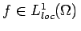
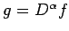
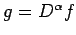

Sei . Wenn es eine Funktion g aus  gibt, so daß für bezüglich eines Multiindex
gibt, so daß für bezüglich eines Multiindex  die Gleichung
die Gleichung
gilt, dann heißt g verallgemeinerte Ableitung, Ableitung im Sinne von SOBOLEW oder Distributionsableitung der Ordnung  von f, wofür man, wie im klassischen Falle,  schreibt.
von f, wofür man, wie im klassischen Falle,  schreibt.
Im Vektorraum  definiert man die Konvergenz einer Folge zu
definiert man die Konvergenz einer Folge zu  wie folgt:
wie folgt:
| (12.212) |
Die Menge  mit dieser Konvergenz von Folgen nennt man Grundraum, bezeichnet ihn mit und nennt seine Elemente häufig Testfunktionen.
mit dieser Konvergenz von Folgen nennt man Grundraum, bezeichnet ihn mit und nennt seine Elemente häufig Testfunktionen.